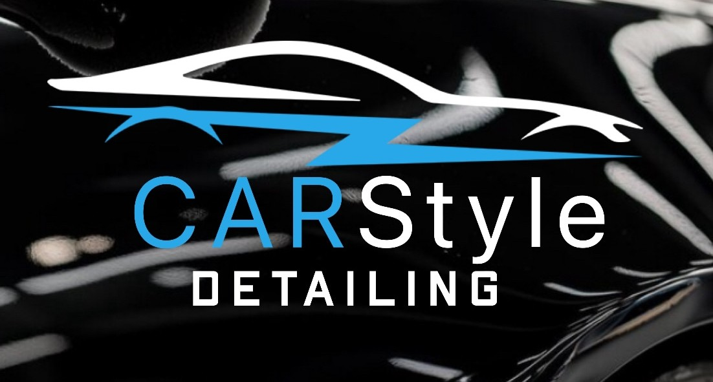

★ 5,0 (49 отзывов 2ГИС)
Детейлинг и кузовной ремонт
Carstyle
Полировка
Нанесение плёнки
Тёплый бокс
Покраска
Ремонт вмятин
Химчистка
Адрес
Норильск, Хантайская улица, 10а
Режим работы
Ежедневно 10:00–20:00, по предварительной записи
Телефон
+7 (913) 164-02-08
Защитные покрытия
Оклейка защитной плёнкой, полировка кузова, аренда тёплого бокса для сушки.
Цены и бренды уточняются при записи.